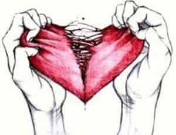
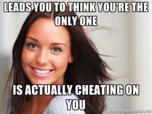
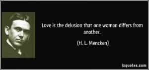

< < < Back
The Timeless Female Abuse Of Love – Return Of Kings
Love is the triumph of imagination over intelligence. – H. L. Mencken
Mencken’s words from “In Defense Of Women” strikes a chord for every awakened man who has understood female nature, and more so about possibly the most overrated (and abused) emotion known to mankind.
Throughout history, women have always been portrayed as the more nurturing, self-sacrificing, idealist and loving gender — while men have been vilified to be on the short end of the stick. Call it social engineering or covert female manipulation, this age old guilt tripping indoctrination has led men to idealizing both love and women to unhealthy heights—to forsake their own intelligence and become victims of an imaginary illusion.
But failure in love shouldn’t mean automatic bitterness, for it can lead to realizing that romantic love (even more so today) is transitory and illusionary in nature. But what is that which renders “love” as simply an imaginary illusion?
A man could’ve tried his best to be the best partner for his woman but to no avail, simply because of the unpredictability and hypocrisy of female nature reveals itself sooner or later in either a relationship or
marriage.
This itself has been explored before where we’ve seen how the Madonna and the whore can be the same woman – and like love, there is no ideal woman. There are no certainties in life except change and the grim reaper, and women are not immune to them. In the end, you cannot control people forever—but you can control how you deal with them and your reactions to the harsh realities of love.
Deconstructing Love

The allure of love has held a powerful pull for humanity for ages (Napoleon Hill even includes it as one of the primary ten stimuli to which the mind responds most freely in “Think And Grow Rich”). Such is its allure that men have often risked everything for the sake of the romantic ideal, the love of a woman.
But in spite of all the relentless blue pill romanticism and social indoctrination throughout ages which paints love as an ideal worth risking life for – while simultaneously pedestalizing women – how it actually affects both men and women in the amoral power game of real life dating, is best expressed by Chinweizu:
Not only does love act differently”on man and woman; the word itself means quite different things to each. When a woman tells a man “I love you”, she means “I want you to feed me, house me, clothe me, fuck me, get me great with child, and take me as your burden until I catch a better slave”. .
…In contrast, when a man tells a woman “I love you”, he means “I am eager to be your slave, and ready to do everything I can to make you satisfied and happy”.
Which is why, when a woman hears a man say to her “I love you”, her joy is great, for she understands him to mean that he has been knocked out by her chloroform of romance, and she can safely tie him up with social ropes, tether him to her nest with legal chains and, while he is still sprawled out in love’s delirium, begin to make a toiling jackass out of him. The Kiswahili poets are among the few male pundits who have gotten things right: they specify that it is men who are made lame and tame by love.
Tame and lame, history is testament to this with numerous examples: some men have achieved great heights to please their women, whilst others have actually squandered their identities for the love of a woman which was illusionary to begin with.
How women transform love into an illusion

Ideally, romantic love was primarily composed of lust, loyalty and tolerant understanding. Without lust, love became compassion, the kind you’d feel for others in a non-sexual way. And because lust bore an important influence on love, loyalty became integral to secure sexual fidelity.
But in today’s convoluted and permissive societies, this loyalty itself has become meaningless in modern love relationships, hell even marriages. A modern woman can claim to “love” her partner yet still fuck around casually while retaining a prudish social image.
And unsurprisingly some men have actually realized this (either through observational experience or accident) to actually seduce such a woman by dropping the “L” word – for that serves as the exonerating password she wants to hear to casually indulge her own inner slut or relationship whore. One would’ve encountered women hypocritically justifying “love” as a reason for their selective promiscuity and infidelities/
In this scenario, love—that supposedly “pure” ideal thing—has now become a modern woman’s get out of jail free card to be ruthlessly abused to often justify her irresponsibility, stupidity, cheating, sluttiness, or even to have anal! There is no limit to female hypocrisy, and love isn’t spared from it too.
Twisted “love” and its power games
The timeless story of Samson highlights how women haven’t changed much throughout history and abused love themselves to manipulate men for their own selfish motives, which they often accused men of. Numerous examples like these shatter the blue pill idea that women are the more idealist and morally upright of the two sexes, especially when it comes to love.
While Mencken mentions women are the strategizing realists in the game of love, Chinweizu rather highlights the simpleton ignorant sentimentality of a man in love:
Man, in his sentimentality, may refuse to acknowledge that the love felt for him by the woman who loves him is, at its core, a slaver’s love for her slave.
Those who doubt that should consider a woman’s proverbial reaction to her spurned love, or to a mate who deserts her nest. When she cries “seduced and abandoned”, her rage is that of a lioness whose intended dinner has run away. When she cries that her husband has deserted her, her fury is that of a slaveholder whose slave has run away.
If he has run off with another woman, her rage at the other woman is I hat of one slaveholder at another slaveholder who has kidnapped’ her property. Were men fully conscious of the predatory nature and exploitative purpose of a nesting woman’s love for her man, they might be found each day praying: “God save man from the love of woman! ” That men do not is a measure of how sentimentality thoroughly beclouds their eyes. – The Anatomy Of Female Power
If love is blind, it is more so for men due to their sentimentality which Chinweizu points out. A man’s emotional attachment is the prize what women seek – for that is what secures his slavery. And even if love is an illusion for women too, women are usually much faster to snap out of it due to their realism, and as when it suits them conveniently.
This also highlights the psychological advantage women have over men, ironically given to them by men: keeping in mind the traditional belief that men are the gatekeepers of commitment and love, while women are the gatekeepers of sex. A woman needs to qualify herself first to earn a man’s love, so the man who hands his marbles on a platter to her casually is himself to blame.
In this power game, the man who forfeits his advantage of peddling love stands to lose if he instead seeks both love and sex from women, for women will always try to acquire total control.
Conclusion

The truth about love’s illusionary nature is bitter and hard to digest for the unitiated man—but for the awakened man this reality is itself liberating, helping him to sidestep one of life’s common pitfalls.
Love actually is not a bad thing; but because today it increasingly has become a tool for female manipulation and deception than ever before, its virtues itself have been eroded to render it to nothing but an idealistic illusion for the modern man, even more than for his forefathers.
Read Next: How Women Use Love As An Excuse To Extract A Man’s Resources And Deplete His Life Energy


{kind=link}
{kind=link}
{kind=link}
{kind=link}
{kind=link}